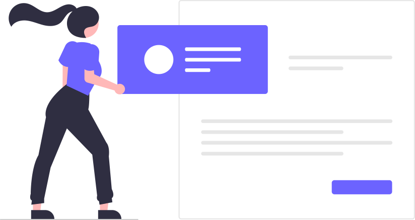

The mentor i wish i had
You wish you found us earlier.
PHP Web Development with long introduction curriculum
- First things first
- Introduction
- Get a free mentor
- HTML and CSS
- JavaScript
- Bootstrap
- GIT
- SEO
- PHP
- MYSQL
- Framework: Laravel
- Coding Challenge Platforms
- Cool things
- Job part
- Besides programming
The mentor i wish i had
You wish you found us earlier.
PHP Web Development with long introduction curriculum
Before starting
-
About this course
about
This course is generally about building websites and applications using php and some of the most important related technologies, such as html,css, javascript and mysql.
We have made this path by pulling the best resources from around the web and combining them in a unique way, to help ease this incredible journey for you.
Now, as some of you may know, php is not the only programming language or technology that can be used on the server, there are many more(python,c#..), but php is: widely used, easy to learn, has a great community etc.
prerequisites
You need to know English :D, have a basic knowledge of computers, how to type et cetera. No big deal, if you know some of the things below feel free to skip them.
what should i know after this
After completing most of the stuff that is in our curriculum and of course, doing the coding part yourself, you will be able to build static and dynamic websites,to build stuff like login systems, simple social media sites, basics of command line use and so on.
how much time to complete
Obviously it depends on how much time you spend each day blabla,but rougly speaking, but if you spend about 3.5 hours each day on learning and coding, it shouldn't take much more than 10-11 months to complete most of this course
-
 How to Google like a pro
How to Google like a pro
why this lesson
Using the search engines such as Google,Opera,Mozilla etc. ,the right way and finding the most relevant results for your query is one of the most important and easy skills to learn in the 21.century and you,as a future software developer, will benefit greatly from learning it
what should i know after this
After finishing this section about searching online, you should be able to google like a pro:)
Assignment
Learn the basics of command prompt, google it and find it yourself, you should know things like how to make a directory, navigate with cmd, rename a file etc
How To Google Like A Pro! Top 10 Google Search Tips & Tricks 5:40
or
-
 Something about mistakes and how to learn
Something about mistakes and how to learn
One of the coolest things i learned is, before even starting a new field is to just research what are some of the biggest mistakes people make when doing something related to that field..
why this lesson
It will really save you a lot of time
what should i know after this
Exactly what to do and how to approach learning this field
summary of this section
Basically, the summary of the things below: don't just watch or read the tutorials, do something with your knowledge or you will forget everyting. Build something, always code, make it a habit, sleep well, eat healthy and exercise.
There is no need to memorize code that much, learn to understand, it is normal to use stackoverflow and docs a lot , we all do it :)
Teaching yourself to learn programming? Start Here! | Andy Sterkowitz 10:00
How to ACTUALLY LEARN using programming tutorials! | Andy Sterkowitz 13:50
Get out of Code Tutorial Hell now, and Get a Job! | Stefan Mischook 13:30
What did 25 Years of Code Teach Me? | Stefan Mischook 13:00
You'll Never Get A Job By Just "Learning" HTML, CSS & JavaScript | Dorian Develops 5:10
title kinda misleading,just watch this :) | Dorian Develops 12:00
Best Learning Strategies for Programmers | mayuko 07:50
The WORST Study Habit for Software Developers | Andy Sterkowitz 07:50
5 Biggest MYTHS of Software Development (for BEGINNERS only) | Andy Sterkowitz 16:10
-
 Math & web development - you can skip this
Math & web development - you can skip this
Here we discuss if math is important or not for web development
Do you need to be good at math to be a software developer? | Tiff In Tech 05:00
How Important is Math? (To Become a Software Developer) | Andy Sterkowitz 06:40
But, if you think you need it more or you for any reason wish to be better at math, this is a great resource. github repo
-
 Best resources to figure out stuff
Best resources to figure out stuff
There are a lot of things that you... so you will have to figure that out yourself,that is why
-
Memorizing and faster learning in programming
-
 CS50 HARVARD
CS50 HARVARD
do i need this?
Well, you don't need it but it will take you a long way and will repay you long term.
How cool is it that you are having online lectures from Harvard, for free?
Btw, the things below are for the folks who want to become hardcore programmers and get a little bit deeper into understanding, not just php but programming in general
Introduction
-
 Web developer job(s) - you can skip this
Web developer job(s) - you can skip this
Free mentor
-
 free programming mentor for you
free programming mentor for you
Having a mentor can be really helpful, both to mentor and the mentee (the one who is learning), it may help you to build your potfolio, fix your weaknesses,find a job etc. We highly recommend finding one (or more!)
If you want you can get a free mentor at : pushfar
HTML and CSS
-
 HTML and CSS Basics
HTML and CSS Basics
Download for example Notepad++, which is useful for Beginners and Atom or VSCode, which you could use later on
Choose either one of the 3 things below, or if you want you can watch more than one tutorial series, just make sure to not get stuck in "tutorial hell" and to actually code, make websites and get a lot of practise.
CS50 2020 - Lecture 8 - HTML, CSS, JavaScript (Harvard)
playlists:
The Net Ninja playlist (follow allong)
HTML and CSS Dani Krossing playlist (follow allong)
It would probably be smart to check the validity of your code in the beginning for html: html w3 validatior
Pick up the best practices in the beginning so you save time later on and make this process even easier.
More great resources at our page : e-ltcode resources
-
 css
css
-
 Crash courses
Crash courses
-
 Project based
Project based
HTML Tutorial - How to Make a Super Simple Website | freeCodeCamp 32:30
HTML5 & CSS Development: Learn How to Build a Professional Website | Udemy 1:38:00
Build An HTML5 Website With A Responsive Layout| Traversy Media 1:01:00
Build a Modern Landing Page Website | HTML & CSS| Traversy Media 1:15:00
Build a Responsive Grid CSS Website Layout From Scratch | Traversy Media 46:00
-
 Books:
Books:
📚 HTML and CSS: Design and Build Websites, by Jon Duckett
📚 Web designing books by Nick Pettit
📚 The Essential Guide to CSS and HTML Web Design, by Craig Grannell
📚 Smashing CSS, by Eric Meyer
JAVASCRIPT
-
 Introduction to JavaScript
Introduction to JavaScript
Javascript Explained! Javascript PRIMER video for beginners. | Andy Sterkowitz 15:20
JavaScript Crash Course For Beginners | Traversy Media 1:40:00
How TO - Copy Text to Clipboard | w3schools
How TO - Clear Input Field | w3schools
or - playlists:
You don't have to watch it and follow it until the end because your goal shouldn't be to master javascript but php, which is your main objective in this course.
JavaScript Programming All-in-One Tutorial Series (9 HOURS!) | Caleb Curry
-
 AJAX
AJAX
Not really essential but highly recommended and useful
This might be confusing at first, don't worry and try again.
W3schools have a lot of examples on this one, use them!
AJAX Crash Course (Vanilla JavaScript) | Traversy Media 1:10:00
or
-
JavaScript books
The book You Don’t Know JS (YDKJS) is free on GitHub, and explains how Javascript works “under the hood”. If you ever wondered why javascript works the way it does, this book is for you!
📕 Eloquent JavaScript
📕 JavaScript: The good parts
📕 Learn JavaScript visually
📕 JavaScript: The definitive guide
📕 A smarter way to learn JavaScript
📕 You Don't Know JS
📕 Effective JavaScript
📕 Speaking JavaScript
bootstrap
-
 Bootstrap
Spend no more than 3 days learning this technology(library in fact). It is very easy and useful for developers to use.. it is mostly copy paste, especially in the beginning, but it really makes a difference in productivity.
Learn things like how to center content in bootstrap with one class, how to do margins, how columns work and stuff like that
The Difference Between a Framework and a Library | freeCodeCamp
What is a CDN? | How do CDNs work? | Cloudflare
GIT
-
 Version control
Version control
-
GIT basics
why this lesson
Git is used for saving (making snapshots of your project in time) and easily sharing the code with other people and that is really important for working in any field that has something to do with the web.
GitHub Tutorial for Beginners | The Basics | Academind 19:00
SEO
-
 Quick SEO
Quick SEO
why this lesson
The purpose of a website is not to make a website but to serve some more important purpose like making money,creating interest and so on.. and one of the things that will help that is SEO
you can skip this section
Search Engine Optimization (SEO) Starter Guide | developers.google.com
PHP
-
 General programming
General programming
More about programming in general.
-
PHP & MySQL a lot in one place
PHP Programming | Dani Krossing
1: Introduction to PHP Programming | Dani Krossing 05:30
3: Output In Browser Using PHP | Dani Krossing 07:00
4: How to Create PHP Variables | Dani Krossing 07:30
5: How to Write Comments in PHP | Dani Krossing 02:00
6: What Are Internal Functions in PHP | Dani Krossing 06:10
7: Different Data Types in PHP | Dani Krossing 06:50
And so on, complete the whole course above with the Dani Krossing (formerly mmtuts); it would be great to have all that code in one folder so you could come back later and revisit and maybe use it as a template or code snippet, it will save you quite a time
If you maybe can't understand Dani when he talks about OOP, first try in a couple of days to understand the basic principles that OOP is based on, you can do that by watching him explain it over and over again slowly with the persons example, or go and read the resource below. Don't worry, OOP is usualy tough when you are coming from a procedural background, its all okay :)
How to explain object-oriented programming concepts to a 6-year-old
How to Create RESTful API in PHP | RESTful API With PHP & MySQL | ProgrammingKnowledge 1:44:00
Something more interesting, learn a bit about CMS's and their use in the industry, it is not mandatory that you look into this but it would be useful.
Should Web Developers FEAR Wix? | Stefan Mischook 8:00
WordPress 5 Crash Course for Absolute Beginners | DesignCourse 55:00
PHP Get URL – How to Get the Full URL of the Current Page
not language specific:
Introduction to Scrum | Uzility 07:50 (important)
KISS, DRY, YAGNI and More. The 7 Acronyms Every Developer Should Know | thefullstack.xyz
10 important rules that every person employed in IT sector should know, but does not or don't care
-
Books:
MYSQL
-
 Database basics
Database basics
-
 Mysql a lot in one place
Mysql a lot in one place
-
More than just MySQL
why this lesson
This serves to open your mind and teach you that there are many more ways to handle data
-
Crash Course
Btw ,the proper way to pronounce mysql is 'mai Ess-que-ell', not 'sequel' :)))
Coding Challenge Platforms
-
 Coding Challenge Platforms
Coding Challenge Platforms
From time to time,and it may be useful for you to just look into this sites and play a little bit, algorithms may come in handy in the future, especially for technicall interviews :)
Framework : Laravel
-
Framework : Laravel
prerequisites
Be sure to know a lot about php and to be able to create at least login system or something like a webshop, it is not smart to learn php and mysql while learning any php framework. Also, you will have to understand MVC pattern and routing.
cool things
-
cool things
CSS Tips you won't see in most tutorials | Hashnode
create a typing effect with zero JavaScript | Hashnode
GitHub Pages Deploy & Domain - Free hosting and domain
7 Security Risks and Hacking Stories for Web Developers| Fireship
Royalty free illustrations for 404 pages |
Awesome illustration constructor with colorful and trendy characters |
Create and share beautiful images of your source code. |
generate fonts until you like it |
Tips For Getting Clients | Web Development | Traversy Media
Worst JavaScript Flaws That Hackers Love To Abuse| Coding Tech 23:30
Job part
- Job part
Besides programming
-
 Besides programming
Besides programming
why this section?
Life is not only about programming, and actually learning about some other fields and practical things can prove useful in the future, not only for the programming but the other important aspects of life such as health, wealth, love and happiness.
One more answer: why not?
Deep Work: Rules for Focused Success in a Distracted World | Workforce 53:30
RICH DAD POOR DAD SUMMARY (BY ROBERT KIYOSAKI) | The Swedish Investor 09:09
Building a Life - Howard H. Stevenson | Harvard Business School 57:00
Do Not Use Debit Cards, Frank Abagnale 04:05